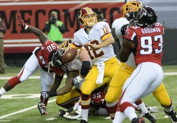
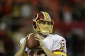
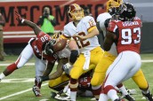

Kirk Cousin's play gibes Mike Shanahan, Kyle Shanahan something to smile about
ATLANTA — The smile on Coach Mike Shanahan’s face at halftime revealed the validation he expected to receive all along in Sunday’s game between the Washington Redskins and Atlanta Falcons. Kirk Cousins’s fast start in guiding Washington to a three-point lead briefly provided indisputable proof Shanahan was right to promote the former backup and bench Robert Griffin III for the remainder of the season.
But the embattled coach’s good feeling didn’t last long. Cousins struggled in the second half of his second career start, and his potential go-ahead conversion pass to wide receiver Pierre Garcon was broken up in the back of the end zone as the Redskins lost their sixth straight, 27-26.
Email Facebook Twitter
Gallery
Washington loses sixth in a row:
End-of-game two-point conversion play fails as the Redskins lose to the Falcons, 27-26
More Redskins/NFL coverage
Takeaway -- Cousins shows promise
 1:25 PM ETVIDEO | Jason Reid is encouraged by Kirk Cousins’s performance, but wonders if he can keep it up against the Cowboys.
An incomplete comeback
 Mark Maske DEC 15In Kirk Cousins’s first start this season, the Redskins score a touchdown with 22 seconds left but fail on the two-point conversion try.
Cousins can’t cure all Redskins’ ills
Sally Jenkins 12:23 AM ETKirk Cousins is a change of pace, and he shined against the Falcons, but he alone can’t fix the Redskins’ dysfunction.
QB gives Shanahans reason to smile
Jason Reid 12:28 AM ETThe Redskins’ Kirk Cousins isn’t perfect, but he has his moments in a one-point loss at Atlanta.
Players back decision to go for two
Mike Jones 12:25 AM ETThough the attempt failed, Redskins players supported Coach Mike Shanahan’s decision to try for a two-point conversion in the final minute.
Redskins-Falcons best and worst
Dan Steinberg DEC 15Best and worst moments from Washington’s 27-26 loss to the Falcons in Atlanta.
Inactive Griffin tries to help
Mike Jones DEC 15Robert Griffin III went from being the starter last week to inactive against the Falcons, so he adjusted to the role of being a supporting cast member.
Williams sprains knee
Mike Jones DEC 15Redskins left tackle Trent Williams said he suffered a “light” sprain to his right knee early in the second quarter of his team’s 27-26 loss to the Atlanta Falcons.
Shanahan leaves postgame news conference
Mark Maske DEC 15Redskins coach leaves politely but abruptly after about five minutes of questioning.
With the Redskins leading 20-17 at halftime, Shanahan had reason to be pleased. Cousins was fundamentally sound and accurate, and he had made big plays while passing for 248 yards and two touchdowns. Fact is, Cousins directed the offense much more efficiently than Griffin had for most of the 3-11 team’s horrendous season.
In the second half, however, Cousins cooled off against one of the NFL’s worst defenses. He threw two interceptions — the Redskins had seven turnovers — and had a rough stretch until the team’s final possession.
The second-year player was sharp on a 13-play, 80-yard drive capped by his short touchdown pass to wide receiver Santana Moss with only 18 seconds remaining in the game. Atlanta cornerback Desmond Trufant ended Cousins’s bid to complete a fourth-quarter comeback when he tipped away a pass intended for Garcon. In an uneven performance, Cousins finished with 381 yards, three touchdowns and three turnovers.
Clearly, the Redskins’ new starting signal-caller wasn’t perfect, especially in the final two quarters at the Georgia Dome. Cousins did just enough, though, to maintain the buzz about a potential quarterback controversy next season.
Shanahan’s decision to go all-in on Cousins resulted in more questions about the team’s most important position. Let’s examine.
A tale of two halves
Cousins’s first-half passer rating of 141.2 illustrated his effectiveness. Play-caller Kyle Shanahan stripped down the offense, removing the zone-read option plays he installed for Griffin. Directing the Redskins’ basic offense, in which quarterbacks move often on rollouts, Cousins did a lot well.
He dropped back smoothly and displayed strong mechanics in the pocket by setting his feet and throwing off the correct foot. Cousins hit receivers in stride on slant routes. He delivered a nice deep ball to wide receiver Aldrick Robinson for a 62-yard gain.
With the Redskins trailing 14-0 in the first quarter, Cousins rolled to his right and connected with little-used tight end Fred Davis for a 23-yard touchdown. He made the correct read on a 53-yard touchdown pass to Garcon.
In the third quarter, Cousins’s passer rating dropped to 6.2. He completed only 3 of 8 passes for seven yards with an interception. The Falcons’ secondary played better after the break.
Cousins got going again with 3 minutes 25 seconds to play. The Redskins took over at their 20-yard line, and Cousins, who benefitted from Kyle’s play-calling, regained his confidence by connecting with wideouts on short passes. Cousins finished with 126 yards in the fourth and a 91.8 rating. But for Cousins and the Redskins, Trufant’s breakup ruined the ending.
Differences in the QBs
Cousins played in a pro-style system in college. He displayed his pocket skills while leading the Redskins to two victories in relief of Griffin last season. Even with his missteps against Atlanta, Cousins reminded everyone he is further along in the pocket than Griffin.
Cousins helped the offensive line. Often, Cousins dropped back and stayed on his spot. Cousins usually was where he was supposed to be in the pocket. That makes it easier for the line to protect him.
To avoid the rush, Cousins would step up or slide to a side while remaining in a small area. It’s called having good pocket presence. The Falcons only had one sack. In the Redskins’ previous three games, Griffin was sacked 16 times.
Privately, some in the organization have expressed frustration Griffin doesn’t stay set in the pocket. I know what some of you are thinking: It’s hard to stay in a pocket when it’s collapsing around you. Although it’s true the Redskins’ offensive line isn’t among the NFL’s best in pass protection, Cousins showed how some sacks can be avoided.
Cousins’s accuracy made a big difference, too. Before his benching, Griffin sailed too many passes. That’s all about passing mechanics. For the most part Sunday, Cousins was consistent on his arm angle and follow-through.
The 4-10 Falcons are among the league’s worst teams defensively. At the start of the day, Atlanta ranked 20th against the pass and had given up the fifth-most points.
On many plays, particularly in the first half, Cousins didn’t have to cycle through progressions because his primary targets were open. It seemed like the Falcons had never seen a slant route.
Still, Cousins’s overall outing was encouraging. And when you consider Cousins only has had one week of first-team reps in practice, perhaps it was very encouraging.
Play-caller’s delight
Nothing frustrates Kyle Shanahan more than wasting plays. Coaches call it leaving yards on the field. Washington has wasted a lot of plays this season. Of course, that’s not all on Griffin.
The line must be improved in the offseason at right tackle and at least one interior position. The Redskins need another big-time target opposite Garcon. Sunday’s game marked one of the few times this season the Redskins didn’t call a bunch of gimmick plays, such as screens, to free Garcon from coverage.
Cousins, though, also put a smile on Kyle’s face because many plays were executed as they were designed. Correct options were picked, and the Redskins produced meaningful yards.
The takeaway
Mike Shanahan didn’t totally succeed in proving that poor quarterback play was the team’s biggest problem on offense. But Cousins will get two more opportunities to audition for next season. Count on Shanahan continuing to do all he can to help make Cousins look good.
For more by Jason Reid, visit washingtonpost.com/reid.